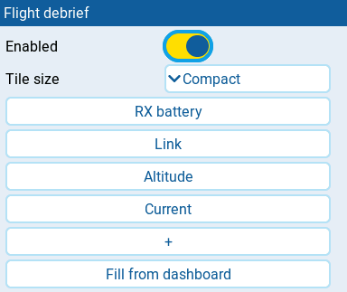
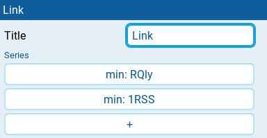
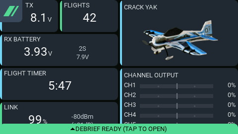
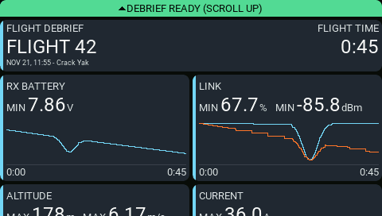

Customize flight debrief
After a recorded flight, the flight debrief shows a flight summary and a set of tiles with each tile's recorded values.
Configure the tiles
AeroGrid → Flight debrief configures the current layout's post-flight tiles. Turn Enabled off to disable it for this layout without deleting its tiles. Tile size applies to the whole debrief: Compact or Wide. Each tile has a title and up to three telemetry series. Tap a tile or series to edit, move, or delete it. Fill from dashboard places RX battery and Link first, when present.


Leaving with changes offers Save layout, Save layout as..., or Discard changes. These save the layout, including its debrief settings; they do not save a flight recording.
View the debrief
After a recorded flight, a Preparing debrief bar fills with green for about ten seconds, then becomes a Debrief ready bar that stays at the bottom until you arm again or reset the session. In fullscreen, tap it to open.

Drag up or down to move one row of charts at a time. A translucent scroll bar appears on the right edge and fades after two seconds. The Debrief ready bar scrolls with the charts. To return to the dashboard, tap it, press RTN, or scroll up from the first row. Tile accents and badges show the worst recorded severity: red for critical, yellow for warning, and blue otherwise. Values include the recorded source's units unless the series overrides them. Minimum and maximum values are marked MIN and MAX.
Each reading is shown until the next one arrives, so whole-number sensors such as satellites appear as steps.
